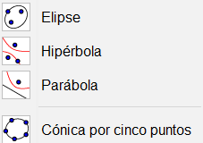

Breve introducción a Geogebra
Una de las herramientas más utilizadas en niveles preuniversitarios es Geogebra (primaria incluida), cuya licencia para aplicaciones no comerciales es de tipo GNU GPL y se descarga gratuitamente. Además, se puede emplear directamente en línea. Geogebra se puede clasificar como software de geometría dinámica, en el que confluyen un procesador geométrico y otro algebraico y existe muchísima literatura al respecto, así como investigaciones y experiencias didácticas.
Antes de empezar con esta mini-introducción a Geogebra, es de recibo avisar de que si no le gusta al lector... hay otras. No hay más que asomarse a la wiki oficial de Geogebra en español o al manual y los tutoriales en inglés. Aquí haremos una introducción técnica, a la que añadiremos ejemplos de actividades.
Descarga e instalación
Aunque ya hemos dicho que no hace falta instalar nada, en este curso emplearemos la versión 5, disponible en la web de descargas de Geogebra donde pone «GeoGebra Classic 5». El hecho de no emplear la nueva versión 6, es que muchos materiales de ayuda que se pueden encontrar fácilmente, se refieren a la versión 5. Por otro lado, todo lo que mencionemos aquí es válido para la nueva versión, y además las construcciones y archivos correspondientes son compatibles. De hecho, existe cierto debate en los propios foros de Geogebra acerca de cuál de las dos versiones es mejor. La principal ventaja de la versión 6 es su adaptación a dispositivos móviles.
Filosofía
Si no hemos abierto nunca Geogebra, puede sorprendernos el minimalismo de la interfaz. Unos ejes cartesianos de referencia, un panel a la izquierda y un menú con «herramientas y comandos». Es posible que la primera vez que lo abrimos, se abra en modo «calculadora gráfica», por lo que para abrir la interfaz clásica tendremos que ir al menú. Por otro lado, una de las características de Geogebra es que es dinámico, y ofrece diversas «apariencias» (vistas, en versiones anteriores), que van en relación con el tipo de representación de los objetos matemáticos que intervienen. Por ejemplo, representación algebraica y gráfica. Esto significa que si modificamos un objeto en cualquier vista, su representación en las otras se actualiza automáticamente, siempre que sea posible. La apariencia que mostramos a continuación es la de graficación.
La filosofía fundamental de Geogebra es que en las diferentes vistas podremos introducir objetos matemáticos de dos tipos: libres (o independientes) y ligados (o dependientes). Todas las construcciones que hagamos sobre Geogebra dependen de esta distinción.
Herramientas
Las herramientas y comandos, por llamarlos de alguna manera (en el fondo, muchas de ellas son objetos matemáticos), se acceden desde la barra que está disponible en la parte superior de la pantalla. Cada uno de los iconos agrupa, a su vez, una serie de herramientas en un menú desplegable. Con ellas, se pueden realizar construcciones en la vista gráfica utilizando el ratón y, cada vez que introduzcamos un objeto nuevo (recta, circunferencia, etc.), las coordenadas o ecuaciones correspondientes se mostrarán en la vista algebraica.
Cabe observar que los diferentes objetos matemáticos también podemos introducirlos desde la barra de entrada, en la parte inferior, sin más que ingresando sus coordenadas o ecuaciones. Por otro lado, además de la vista gráfica y la algebraica, tenemos:
- Vista gráfica 3D.
- Vista CAS para utilizar el sistema de GeoGebra para cálculos simbólicos.
- Vista de hoja de cálculo para trabajar con datos y conceptos estadísticos.
- Calculadora de probabilidades, para calcular y representar gráficamente distribuciones de probabilidades
Pero detengámonos en la barra de herramientas geométricas para comentarla un poquito.
Elige y mueve, mano alzada
Desde el primer menú accedemos a la herramienta «Elige y mueve», que permite mover objetos sobre la representación gráfica. Es en este menú donde tenemos también las herramientas para hacer figuras (que bien pueden ser funciones) o bocetos, así como borrar. Observaremos que la última herramienta que usemos es la que se queda por defecto hasta que empleemos otra.
Puntos
En este menú se agrupan unas cuantas herramientas relacionadas con los puntos. Con la primera de ellas, «Punto», lo que crearemos es un punto «libre», que podremos desplazar a cualquier lugar. Sin embargo, utilizando las herramientas «punto en objeto», «intersección» o «punto medio o centro» crearemos un punto que cumple unas condiciones determinadas. En estos casos, si mantenemos el cursor encima de la herramienta, nos indica qué tipos de objetos debemos seleccionar para llevar a cabo la acción.
Rectas
En este menú nos encontramos con rectas, segmentos, semirrectas, etc.
Rectas especiales
El menú que hemos llamado «rectas especiales» contiene herramientas para trazar perpendiculares, paralelas, mediatrices, bisectrices, etc.
Polígonos
El menú de polígonos.
Circunferencias
El menú más «circular» de todos, para crear circunferencias, arcos y demás.
Cónicas

Medida
Una primera aproximación al menú de medida son las herramientas que nos permiten medir ángulos, distancias y áreas. Esencial para trabajar la conjetura con Geogebra, porque nos muestra mucha información sobre la construcción realizada.
Transformaciones en el plano
Las transformaciones tales como las simetrías, traslaciones y homotecias las tenemos en este menú.
Controles
De cara a elaborar gifs o manipulables, las herramientas de control son fundamentales. El «deslizador», por ejemplo, es un número que podemos variar con el ratón (entre un mínimo y un máximo que podemos establecer), mientras que si queremos introducir libremente un número utilizaríamos la «casilla de entrada». Además, tenemos la posibilidad de añadir texto o imágenes, así como botones y casillas de control.
Apariencia o vista
Finalmente, tenemos un menú con el que controlar la vista en sí. Por ejemplo, qué objetos o etiquetas queremos mostrar, copiar el estilo (formato) visual o hacer zoom. No obstante, para hacer zoom es mucho mejor acostumbrarse a utilizar la tecla control mientras manejamos la rueda del ratón.